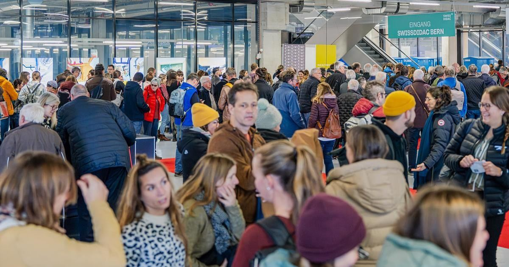

Conferences · Education
Swissdidac Bern 2027
- Dates
- –
- Venue
- BERNEXPO, Bern
- Location
- Bern, Switzerland
- Format
- In-person
- Category
- Education
- Industry
- Education fair
- Organiser
- Swissdidac / BERNEXPO
- Official website
- https://swissdidac-bern.ch/users/de/oeffnungszeiten-eintrittspreise
About
Dates are local to the host city (Central European Time, UTC+1 / UTC+2 in summer).
Topics: education, edtech, didactics.
No organiser attendance figure found on the official pages fetched 24 Nov 2026. Ranked by our estimated size tier 'large' (30,000-100,000 attendees/visits), a judgement from format, venue and scale, not an official number.
Sources
- Official — https://swissdidac-bern.ch/users/de/oeffnungszeiten-eintrittspreise
- Official — https://swissdidac-bern.ch/de/highlights
- Official — https://swissdidac.bernexpo.ch/de
Venue
- BERNEXPO — Exhibition grounds · Mingerstrasse 6, CH-3000 Bern 22, Switzerland · 9,000 capacity